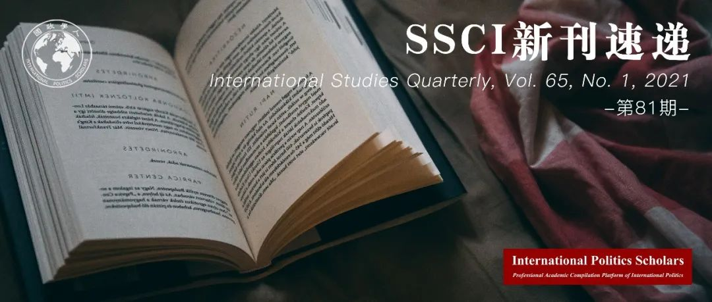

收录于合集 #新刊速递 123个

期刊简介
《国际研究季刊》（International Studies Quarterly）是国际研究协会的旗舰期刊，由牛津大学出版社每年发行四期，旨在发表与国际研究中重要理论性、实证性、规范性主题相关的领先学术成果。根据Journal Citation Reports的数据，2019年该期刊的影响因子为2.146。
本期编委
【编译】 肖龙 刘瑛琛 房宇馨 任潇依 李源
【审校】 房宇馨 任潇依 刘瑛琛 李源 肖龙
【排版】 秦子宁
【美编】 杜丛竹

本期目录
1.联合国维和部队的领导人选择
Leadership Selection in United Nations Peacekeeping
2.争取影响力：多边开发银行中的机制扩散
Angling for Influence: Institutional Proliferation in Development Banking
3.承认困境：巴以冲突中的谈判身份
The Recognition Dilemma: Negotiating Identity in the Israeli–Palestinian Conflict
4.违法与枉法：国际移民如何与国家边界谈判
Law Breaking and Law Bending: How International Migrants Negotiate with State Borders
5.国际组织秘书处日益增加的代表性：以1997年至2015年联合国系统为例
The Increasing Representativeness of International Organizations’ Secretariats: Evidence from the United Nations System, 1997–2015
01
联合国维和部队的领导人选择
【题目】 Leadership Selection in United Nations Peacekeeping
【作者】 Kseniya Oksamytna, 伦敦国王大学战争研究系助理研究员；Vincenzo Bove, 华威大学政治科学系教授；Magnus Lundgren, 斯德哥尔摩大学政治科学系副教授。
【摘要】 各国都觊觎国际组织中的领导和幕僚职位。联合国维和行动中的文职领导和部队指挥官对于成员国来说也具有吸引力。在维和行动领导人的选择中，联合国秘书处会平衡三种考虑：为了满足强大的成员国而任命其国民；表彰成员国对组织的贡献；以及确保所选官员拥有必要的技能。作者调查了1990到2017年之间24次维和行动中的200位文职和军事领导的任命，并发现向某一特定维和任务贡献部队能够增加获得在该任务中的维和领导职位的机会。维和官员的国家与冲突国家之间地理上的接近随着时间推移愈发成为一个有利因素。联合国维和行动中的文职领导人通常来自机制和组织层面上的强国，而军事指挥官则来自主要的维和人员派遣国。抛开在任命过程中技能所扮演的角色，若是联合国对于部队派遣国和机制层面强国的依赖使其无法选择得力的维和行动领导者，那么这种依赖将成为一个功能障碍的来源。这种关系也影响着成员国之间力量严重不均等或依赖于自愿贡献的国际组织。
States covet leadership and staff positions in international organizations. The posts of civilian leaders and force commanders of United Nations (UN) peacekeeping operations are attractive to member states. In selecting peacekeeping leaders, the UN Secretariat balances three considerations: satisfying powerful member states by appointing their nationals; recognizing member states’ contribution to the work of the organization; and ensuring that leaders have the necessary skill set. We investigate appointments of more than 200 civilian and military leaders in 24 UN missions, 1990–2017. We find that contributing troops to a specific mission increases the chances of securing a peacekeeping leadership position. Geographic proximity between the leaders’ country and the conflict country is also a favorable factor whose importance has increased over time. Civilian leaders of UN peacekeeping operations tend to hail from institutionally powerful countries, while military commanders come from major, long-standing troop contributing countries. Despite some role that skills play in the appointment process, the UN’s dependence on troop contributors, together with its reliance on institutionally powerful states, can be a source of dysfunction if it prevents the organization from selecting effective peacekeeping leaders. This dynamic affects other international organizations that have significant power disparities among members or rely on voluntary contributions.
【编译】 肖龙
【校对】 李源
【审核】 任潇依
02
争取影响力：多边开发银行中的机制扩散
【题目】 Angling for Influence: Institutional Proliferation in Development Banking
【作者】 Tyler Pratt，耶鲁大学政治科学系助理教授。
【摘要】 为什么国家会在已经有许多机制存在的问题领域建立新的国际组织？主流理论强调国际组织能够解决市场失灵的问题，但是增加新的国际组织却会提高不确定性和规则不一致性。作者认为，当现有的国际组织不能适应国家权力的转变时，机制扩散就会发生。成员国期望决策制定规则能够反映其潜在的权力；当规则与其潜在权力不匹配时，它们就会要求在国际组织中有更大的影响力。但其后关于国际组织影响力再分配的谈判和讨价还价通常却会因为信任和信息问题而失败。结果是，代表权不充分的国家会建立新的国际组织从而为自己提供更好的机制控制力。为了测试这一立论，作者检验了1944年以来多边开发银行的扩散。作者采用了一个新颖的识别策略，从布雷顿森林体系中的世界银行投票权分配入手，展示出当现存机制中发生权力错配时，机制扩散的可能性也会增加。作者的结论表明，全球权力转变所带来的冲突加剧了全球治理的碎片化。
Why do states build new international organizations (IOs) in issue areas where many institutions already exist? Prevailing theories of institutional creation emphasize their ability to resolve market failures, but adding new IOs can increase uncertainty and rule inconsistency. I argue that institutional proliferation occurs when existing IOs fail to adapt to shifts in state power. Member states expect decision-making rules to reflect their underlying power; when it does not, they demand greater influence in the organization. Subsequent bargaining over the redistribution of IO influence often fails due to credibility and information problems. As a result, under-represented states construct new organizations that provide them with greater institutional control. To test this argument, I examine the proliferation of multilateral development banks since 1944. I leverage a novel identification strategy rooted in the allocation of World Bank votes at Bretton Woods to show that the probability of institutional proliferation is higher when power is misaligned in existing institutions. My results suggest that conflict over shifts in global power contribute to the fragmentation of global governance.
【编译】 刘瑛琛
【校对】 肖龙
【审核】 房宇馨
03
承认困境：巴以冲突中的谈判身份
【题目】 The Recognition Dilemma: Negotiating Identity in the Israeli–Palestinian Conflict
【作者】 Joshua Freedman，欧柏林学院政治科学客座助理教授。
【摘要】 美国斡旋下的巴以和谈持续了近五年（2009年—2014年）。期间，以色列总理内塔尼亚胡一再要求将巴勒斯坦民众而非领导层对以色列犹太国家身份的承认（recognition）作为达成最终地位协议的条件之一。尽管以色列政府在积极推动这一条件的实现，但以色列的政界和军事界精英们一直都对政府的这一谈判姿态表示反对。该国精英们认为，过于重视争取巴勒斯坦民众的承认将对以色列的国家身份认同构成威胁。是什么造成了以色列国内出现了这种关于是否有必要弥补承认缺失的相异立场？近年来，国际关系学界主要关注某国出于对获得承认的真切需求而不断纠正国际误识（misrecognition）的历程，以及这种自我肯定型承认在社会环境多变的世界中能够维持的时长。然而，这种分析结构和内在认知模型忽略了代理人在制造或避免承认冲突中所能发挥的强大影响力。政治考量会使承认与否的决定蕴含更多含义，因为在本体论的意义上，政治考量可能会导致其他主体将政府争取外界承认的相关活动视为一种脆弱且自损的追求。为解释以色列国内对于承认问题的相异立场，本文构建了一个承认模型和关于承认困境的理论框架，借此将学界的关注点从社会结构及关系转移至国内进程，强调国内进程作为承认政治建构和争论平台的角色定位。
During five years of US-sponsored Israeli–Palestinian peace talks (2009–2014), Israeli PM Netanyahu repeatedly demanded that Palestinians recognize Israel as a Jewish state as part of any final status agreement. Simultaneously, a chorus of Israeli political and military elites consistently challenged this negotiating posture as a threat to the state’s very identity. What explains these competing positions on recognition’s absence and necessity? Considerable attention in IR has recently focused on the lengths states go to correct acts of misrecognition, out of a genuine need for recognition, and the self- certainty recognition provides in a socially uncertain world. This structural and intrinsic model neglects, however, the powerful role agents can play in constructing, or avoiding, recognition conflict. Political considerations can cause recognition, and its absence, to matter more than it otherwise should, just as they can cause others to view recognition campaigns as vulnerable and ontologically harmful pursuits. This article proposes both an instrumental model of recognition and a theory on the recognition dilemma needed to explain these competing attitudes. In doing so, it shifts attention away from social structure, and relations, in order to take domestic processes seriously as a forum for both the construction and contestation of recognition politics.
【编译】 房宇馨
【校对】 任潇依
【审核】 刘瑛琛
04
违法与枉法：国际移民如何与国家边界谈判
【题目】 Law Breaking and Law Bending: How International Migrants Negotiate with State Borders
【作者】 Cassilde Schwartz, 伦敦大学皇家霍洛威学院讲师；Miranda Simon, 埃塞克斯大学讲师；David Hudson, 伯明翰大学教授；Shane D Johnson, 伦敦大学学院教授。
【摘要】 许多国家对于阻止非法移民越来越积极，但大多数证据表明，移民执法政策并不能有效地阻止移民。作者利用社会心理学的文献，特别是决策的二元系统模型，区分了考虑风险和成本的判断和“非结果主义”的判断。非结果主义的决策建立在道德直觉之上，拒绝对成本和收益进行理性考虑。这种心理过程将使国家的威慑工具变得无能为力。作者假设，一些（但不是全部）非法移民的形式将引发非结果主义决策。在考虑半合法策略时，心怀抱负的移民可能会权衡执法政策的风险和成本，他们可能会认为这种策略是“枉法”而不是违反法律。同时，在考虑完全非法的移民策略时，心怀抱负的移民会将违法的道德考虑而非违法的后果置于优先地位。作者利用原始人群列表实验以及原籍国心怀抱负的移民所组成的焦点小组，为本文的理论找到了依据。
Many countries have become increasingly aggressive in their efforts to stop unauthorized migration, but most evidence suggests that immigration enforcement policies do not effectively deter migrants. We draw on literature from social psychology, specifically the dual-system model of decision-making, which differentiates between judgments that are subject to considerations of risks and costs and judgments that are “non-consequentialist.” Non- consequentialist decision-making is founded in moral intuition and rejects rational considerations of costs and benefits. This mental process would render the deterrence tools of the state powerless. We posit that some, but not all, forms of unauthorized migration will invoke non-consequentialist decision-making. When considering semi-legal strategies, which individuals may perceive as “bending the law” rather than breaking it, aspiring migrants are likely to weigh the risks and costs of enforcement policies. Meanwhile, when considering fully illegal migration strategies, aspiring migrants will prioritize moral considerations for breaking the law rather than the consequences of breaking the law. We find evidence for our theory using original population-based list experiments along with focus groups of aspiring migrants in an origin country.
【编译】 任潇依
【校对】 房宇馨
【审核】 李源
05
国际组织秘书处日益增加的代表性：以1997年至2015年联合国系统为例
【题目】 The Increasing Representativeness of International Organizations’ Secretariats: Evidence from the United Nations System, 1997–2015
【作者】 Michal Parizek，布拉格查理大学助理教授；Matthew D Stephen，柏林社会科学研究中心高级研究员。
【摘要】 尽管国际组织及其秘书处在国际政治中发挥着重要作用，但我们对秘书处的职员构成及其塑造因素仍知之甚少。如何解释国际组织秘书处职员的国籍构成？本文认为，国际组织秘书处职员的国籍构成受以下三个因素塑造：强国对于把控机构的意愿、针对秘书处功能有效性的共同利益，以及秘书处通过代表全球人口而获得合法性的需求。基于近期的建构主义文献，本文认为国际组织面临着日益增长的规范性压力，这要求其在职员模式上具有代表性。利用面板回归分析，本文通过一个涵盖1997年至2015年间各国在35个联合国系统机构秘书处的代表性的数据库，检验了该观点。研究结果显示，功能有效性发挥着显著且稳定作用的同时，国际组织秘书处针对全球人口的代表性日益提升。更重要的是，这是以对强国的过度代表为代价的。这种从权力向代表性的转移在具有高政治与社会可见度的大型国际组织中尤为明显。当我们谈及国际组织秘书处时，其代表性是日益重要的。
Although international organizations (IOs) and their secretariats play important roles in international politics, we know surprisingly little about their staffing composition and the factors that shape it. What accounts for the national composition of the secretariats of IOs? We theorize that the national composition of international secretariats is shaped by three factors: the desire by powerful states for institutional control, a commonly shared interest in a secretariat’s functional effectiveness, and, increasingly, a need for secretariats to be seen as legitimate by being representative of the global population. Building on recent constructivist literature, we argue that IOs face increasing normative pressure to be representative in their staffing patterns. Using panel regression, we assess our argument with a new dataset covering states’ representation in the secretariats of thirty-five United Nations system bodies from 1997 to 2015. The results indicate that while functional effectiveness plays a significant and stable role, international secretariats have become increasingly representative of the global population. Moreover, this has come primarily at the expense of the over-representation of powerful states. This shift from power to representation is particularly strong in large IOs with high political and societal visibility. When it comes to IO secretariats, representativeness (increasingly) matters.
【编译】 李源
【校对】 刘瑛琛
【审核】 肖龙
好好学习，天天“在看”
国政学人
支持学术公益与知识传播
微信扫一扫赞赏作者 __赞赏
已喜欢，对作者说句悄悄话
取消 __
发送给作者
发送
最多40字，当前共字
上一页 1/3 下一页
长按二维码向我转账
支持学术公益与知识传播
受苹果公司新规定影响，微信 iOS 版的赞赏功能被关闭，可通过二维码转账支持公众号。